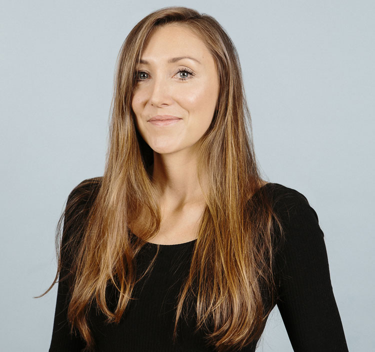
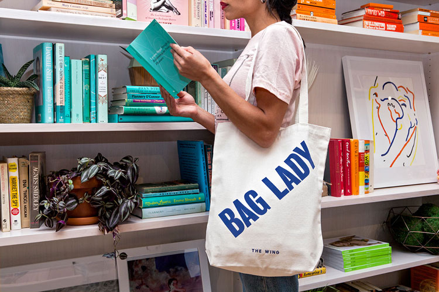
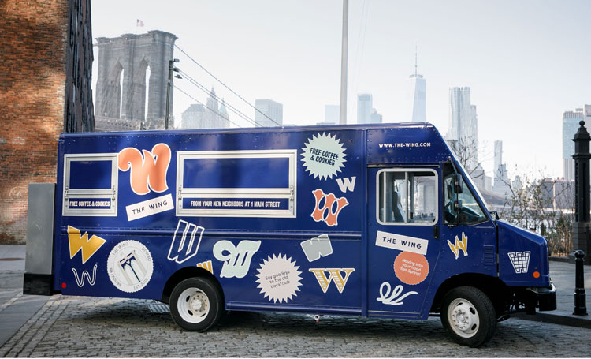
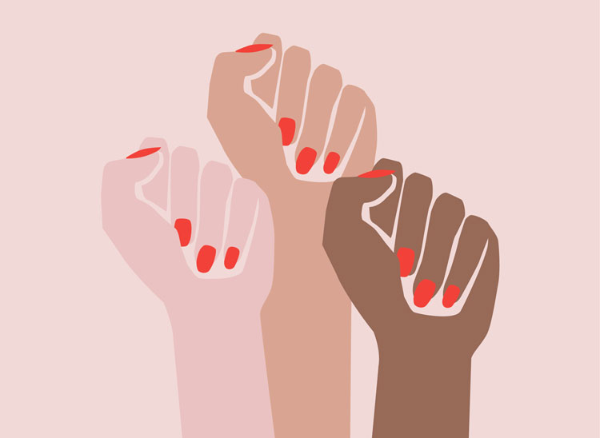
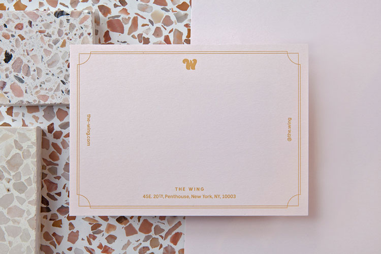

Deva Pardue es una chica aficionada a la versión milenaria actual del feminismo en Instagram. Desde que se graduó de la Escuela de Artes Visuales de Nueva York (SVA) en 2011, el diseñador gráfico ha creado un equipo de diseño interno en el club de miembros exclusivo para mujeres The Wing, fundó una iniciativa de diseño de "empoderamiento" que recauda dinero para las mujeres. organizaciones benéficas, y trabajó con varias otras organizaciones para defender los derechos de las mujeres, todo antes de cumplir 30 años.
Mujeres en Diseño
Cómo Deva Pardue está ayudando a redefinir el feminismo a través del diseño
Hablamos con la ex diseñadora de Pentagram, que ahora dirige el equipo de diseño en el club de miembros solo para mujeres The Wing, sobre hacer el cambio del lado de la marca a lo interno, su obsesión con el cerebro humano y cómo el feminismo puede hacer el bien y se ven bien al mismo tiempo.

Pardue originalmente creció en Irlanda, antes de mudarse a los Estados Unidos con su familia de 16 años y terminar sus últimos años de secundaria en Florida. A pesar de ser una ávida doodler cuando era joven y tener un padre que trabajaba en diseño gráfico, Pardue admite que ser diseñadora nunca fue su primer plan. "Eso podría deberse a que mi papá diseñó, y está esa cosa rebelde de no querer hacer lo que tus padres hicieron", dice ella.
En ese momento, la materia escolar favorita de Pardue era la psicología y se obsesionó con la psique humana. Solo más tarde, cuando pensó en combinar esto con su amor por el dibujo, el diseño gráfico se convirtió en una elección de carrera obvia.
"Cuando pongo los dos juntos, tiene sentido que termine en el diseño", dice Pardue. “En cierto modo, es una fusión de ambas cosas; es arte, pero también se trata de personas y de cómo perciben las cosas ".
Pentagram
Pardue había escuchado a su padre hablar sin cesar sobre Pentagram durante su infancia. Cuando comenzó en el SVA, tomó una decisión calculada para apuntar a los maestros de la oficina de consultoría de Nueva York. Esto incluyó a la leyenda del diseño gráfico Paula Scher, quien terminó siendo la tutora de Pardue para su tesis de último año. Las tácticas de la diseñadora y el arduo trabajo dieron sus frutos, logrando sus pasantías sucesivas con dos socios en la consultoría, Luke Hayman y Michael Beirut. Afortunadamente, justo cuando la pasantía de Pardue en Pentagram estaba llegando a su fin, la recién nombrada socia Emily Oberman estaba en el proceso de construir su propio equipo. Se entrevistó para un papel de diseñador y nunca miró hacia atrás, trabajando bajo Oberman durante cuatro años hasta 2016.
Pardue describe su tiempo en Pentagram como "global" y una "segunda educación en sí misma". Trabajó en todo el espectro de diseño de marca, identidad y movimiento para clientes tan variados como NBC y el Instituto de Arte de Minneapolis. Fue durante su tiempo allí que la diseñadora también comenzó a forjarse un nicho trabajando con marcas y organizaciones dentro de la esfera feminista, como una iniciativa sin fines de lucro llamada Girls Build LA que alienta a las estudiantes de secundaria y preparatoria a desarrollar STEM (ciencia, habilidades tecnológicas, de ingeniería y matemáticas) y la red de tutoría creativa para mujeres ArtTable.

The Wing
En otro giro del destino, el proyecto final en el que Pardue trabajó mientras estaba en Pentagram fue crear la identidad para un nuevo club de miembros y un espacio de trabajo exclusivo para mujeres, que terminó llamándose The Wing. Definitivamente llegó en el momento adecuado para ella y el resto del equipo de diseño femenino que trabajó en el proyecto, dice Pardue. “Estar en un equipo [significaba que] nos habíamos metido en una forma de trabajo muy formulada, lo que de alguna manera es algo bueno y de otra manera puede ser sofocante. Creo que ese trabajo nos ayudó un poco, porque era un tipo de cliente muy diferente ”.
La identidad final que el equipo de Oberman estableció para The Wing apunta a ser indicativa del tipo de feminismo que se extiende por los círculos sociales de las personas y los feeds de Instagram hoy, representando a todos, desde los banqueros hasta los diseñadores de moda que componen su membresía. Cada elemento del club está goteando de rosa milenario y de ingeniosas bromas divertidas pero empoderadoras, como sus bolsos "lady bag" y los alfileres 1-800-Hotline-Wing (uno para cualquier fanático de Drake). "Se habló mucho sobre las mujeres que tienen multitudes", dice Pardue. “Esa fue la razón por la que usamos muchas 'w' diferentes [para el logotipo]. Muestra que a una feminista le puede gustar ir de compras y no necesita disculparse por eso ”.

Avance rápido un año y Pardue ha cerrado el círculo, cambiando la vida de consultoría por un papel interno al frente del equipo de diseño de The Wing. Fundada por Audrey Gelman, destinataria de Forbes 30 y menores de 30 años, que anteriormente trabajó como asistente de prensa en la campaña presidencial de Hilary Clinton en 2008 y es amiga de la infancia de la creadora de Girls Lena Dunham, el club no parece haber perdido nada de la cara fresca y luchadora, espíritu feminista con el que comenzó.
El papel de Pardue en los últimos nueve meses ha sido aprovechar esa energía en una visión coherente y coherente para la empresa. Esto comenzó con la tarea de crear un equipo de la nada (ahora dirige un equipo de cinco diseñadores) y supervisar el diseño de todo, desde carteles hasta menús de cafés. También ha sido promovida recientemente de directora de diseño a directora creativa sénior; un movimiento que consolida su mayor carga de trabajo a medida que la puesta en marcha ha crecido rápidamente para incluir múltiples ubicaciones en todo Estados Unidos, un floreciente negocio minorista y su propia revista llamada No Man's Land.
El cambio del lado de la marca al interno ha sido una curva de aprendizaje empinada para Pardue. "Estoy en muchas reuniones en estos días, que todavía no sé cómo me siento", dice ella.
“Ha sido un gran cambio pasar de ser alguien que se sienta en la computadora y hace todo el diseño, a hacer mucho trabajo administrativo. Es algo a lo que me estoy adaptando todavía, pero lo estoy disfrutando mucho ”.
A pesar de las diferencias obvias en la descripción del trabajo, Pardue dice que ha aportado gran parte de lo que aprendió durante su tiempo en Pentagram a su nuevo cargo. La más importante de estas lecciones ha sido el arte del campo. "Definitivamente aprendí mucho en Pentagram acerca de cómo hablar sobre su trabajo, y eso es viendo a personas como Emily [Oberman] y Michael [Beirut] presentes", dice ella. “Creo que la forma en que presentas tu trabajo es casi tan importante como el trabajo en sí. Necesitas poder venderlo y hacer que la gente lo compre, aún más a veces cuando estás en la casa ”.
For All Womankind
Junto a su papel en The Wing, Pardue también logra hacer malabares con su proyecto de pasión For All Womankind, una iniciativa de diseño que recauda dinero para varias organizaciones benéficas de mujeres como The Center for Reproductive Rights, Emily's List, Joyful Heart Foundation y Safe Horizon. Fundada por Pardue después del sorprendente resultado de las elecciones estadounidenses en 2016 que vio a Donald Trump elegido sobre Hillary Clinton, la iniciativa hasta ahora ha recaudado más de $ 17,000 (£ 12,560). Esto se puede atribuir en gran medida al diseño de "Puños Femme" de Pardue, que se hizo viral el año pasado.
"Estaba haciendo una investigación visual y descubrí que no había puños cerrados de aspecto femenino", dice Pardue, explicando la inspiración detrás del diseño. "Incluso los que habían sido utilizados por los movimientos de mujeres en la historia, como durante la década de 1970, todavía eran bastante agresivos y de aspecto masculino".

En contraste, el diseño de Pardue representa tres puños de mujer bien cuidados con diferentes colores de piel levantados desafiantemente en el aire. El diseñador hizo que los Puños Femme estuvieran disponibles gratuitamente antes de la Marcha de las Mujeres a principios de 2017. Fue compartido por celebridades como Rihanna, Reese Witherspoon y Naomi Campbell en el período previo a la protesta, y el resto es historia. Pardue atribuye en gran medida el impacto causado por la campaña Puños de Femme a estar en el lugar correcto en el momento correcto. “No pude encontrar uno cuando lo logré, pero ahora si buscas en Google puños cerrados, hay tantos. De ninguna manera creo que sea por mí, si no lo hubiera hecho, alguien más lo habría hecho ".
El hilo conductor de las nuevas empresas y organizaciones como The Wing y For All Womankind que están surgiendo en este momento es que explotan claramente el espíritu de un nuevo tipo de feminismo. Esta iteración es tan vital y establece la agenda como las olas que la precedieron. Sin embargo, también se ve bien, y ahí es donde entran en juego diseñadores como Pardue.
